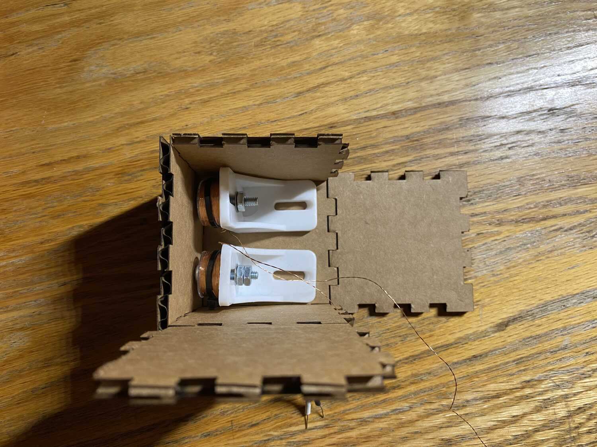
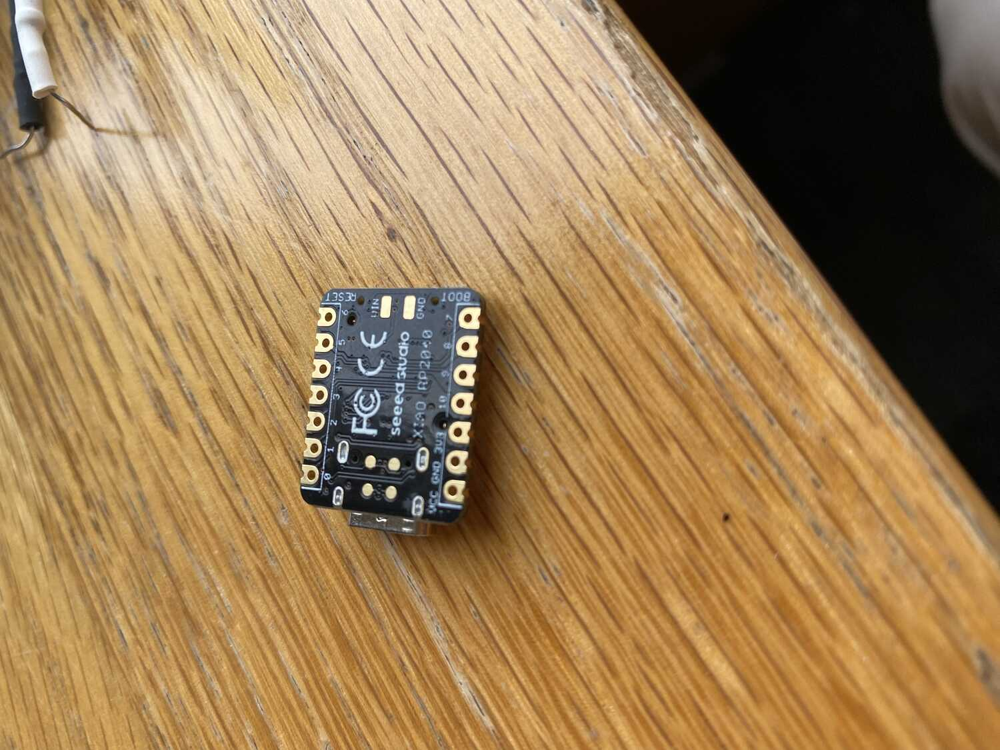
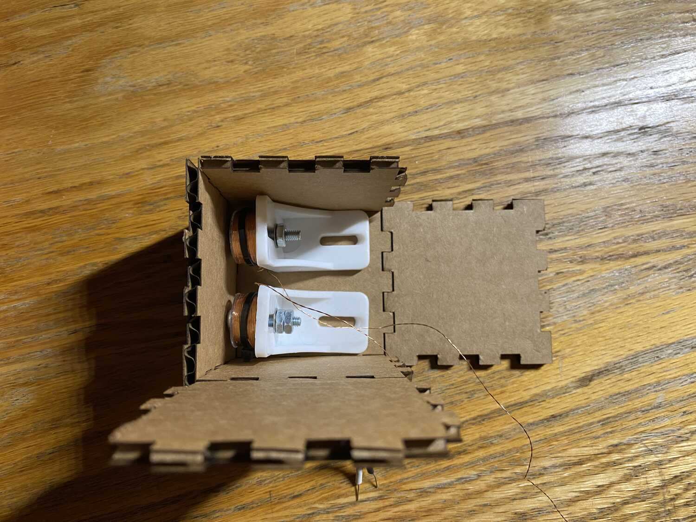
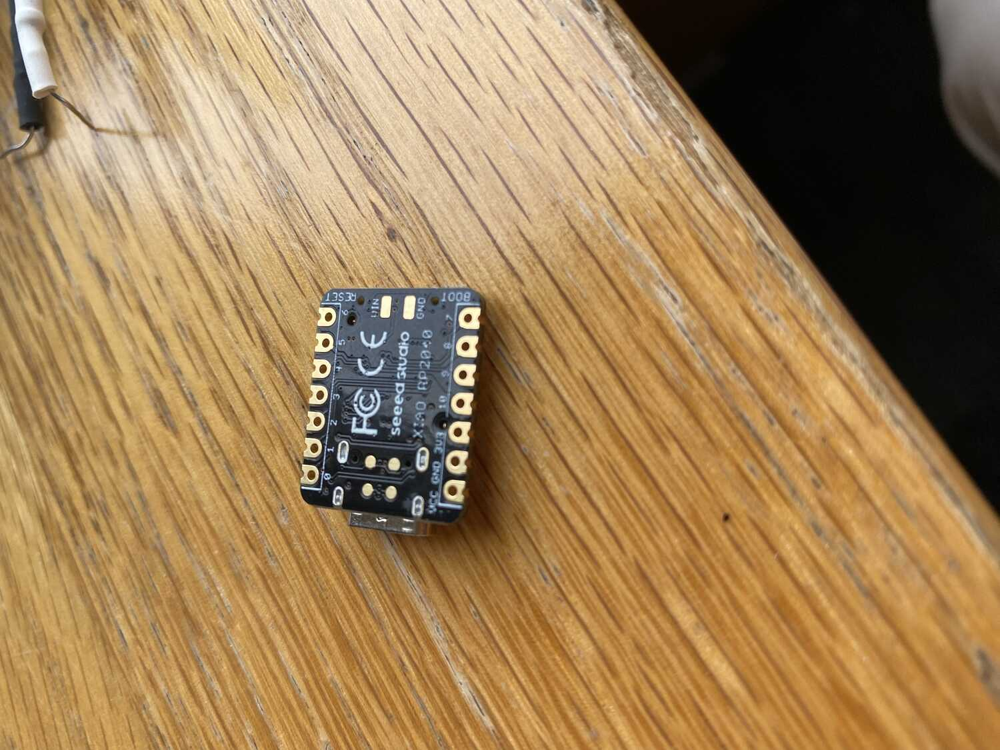
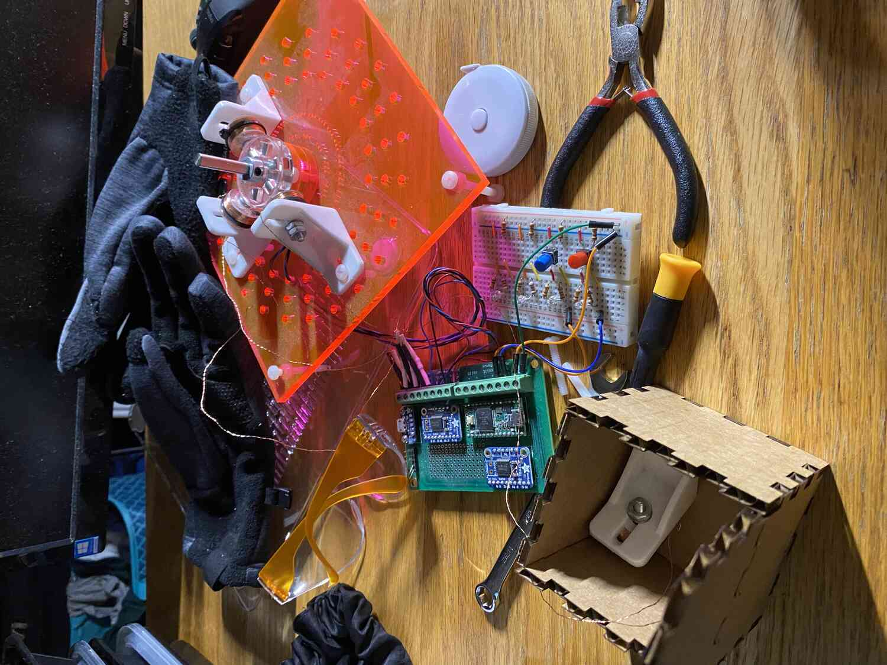
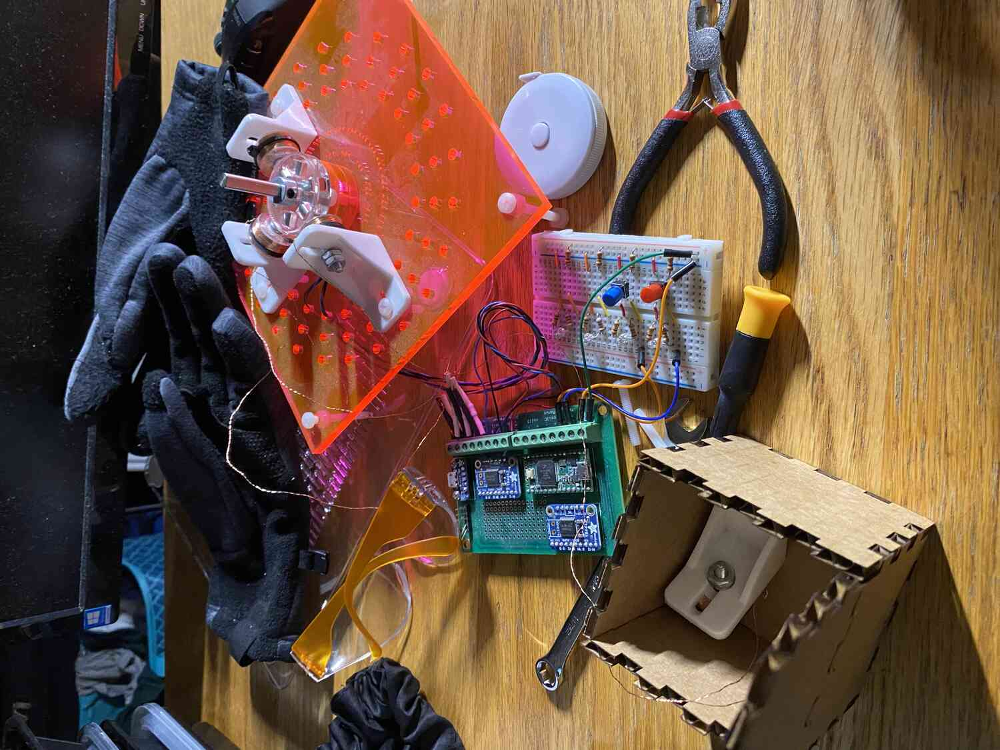
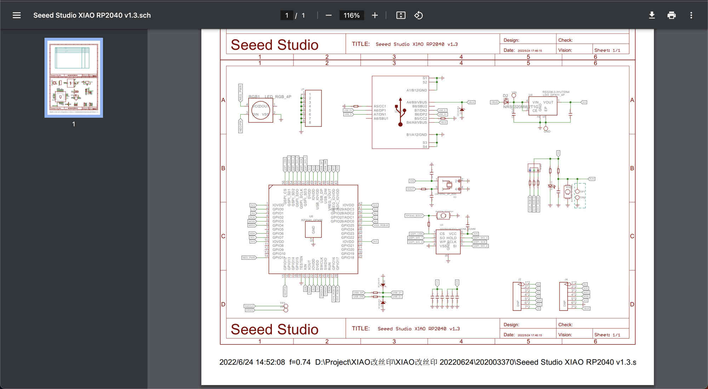

 

Week 3 documentation
>Overview
- What is my goal- get rp2040 connected and interfaced
- embedded in cube, talk to solenoids and lights
- get the rp2040
- get arduino
- make it compatible with the rp2040
- look up seeed xiao rp2040 ardunio core
- follow the instructions
- image of package manager
- change port and board type under tools
- making light blink
- find example code
- find pinout
- use schematics since pinouts didn't help
- replace the numbers
- connect to external actuator
- find analog pins and ground from schematic
Getting Started
To get started, I need to somehow get my arduino software to talk to the rp2040. To do that, I need to plug in the xiao rp2040, and download the pico core by following the steps on the xiao page: https://wiki.seeedstudio.com/XIAO-RP2040-with-Arduino/all the information is there. Once I changed to the port that is being used and the board type to pico under the "tools" tab I should be able to run things now.

To make sure things work, I'll try to make one of the lights blink. To do this, I need to find the GPIO pin number that refers to the embedded leds in the board. I didn't find these in the datasheet and instead found these by looking at the schematics: GPIO17 for the red LED.

After running the sample blink code from one of the arduino tabs it looks like it works!
Getting things to work
Testing the coils- finding which pins are the analog outputs
- read the data sheet or look at schematics
GPIO: general purpose input, output
QSPI: talking to the flash memory (usb interface)
ADC: analog to digital
not sure how i can power my coil
maybe try connecting both wires to gpio and setting one high and the other low
Ill try with pin1 and pin 2.
after simplifying and fixing some syntax errors... it didnt work.
I did get an "eject before removing message" although that just happens when uploading code.
To make sure everything was working I added some blinking of the red led:
It looks like just the coil isnt working. Maybe its not connecting to output pins well. Lets test with an external led
VCC: external power input if not using usb
3V3, powered by usb port
The light isnt turning on, so time to check the voltages using a multimeter.
The voltage is 3.3v so it works fine. I must have too much resistance or the circuit isnt completing
Ah. I confused where the high vs the low voltage was and swapped the leads of the led
Maybe 3.3V just isnt enough make any significant field.
Ill test this by directly connecting the leads to the 3V and ground.
alright there was an attraction.
I do remember it being able to lift up a screw however, like it generated a lot more force.
Lets compare to the voltage coming out of the TB6612. Nevermind I dont remember
what the board type is and the port isnt connecting.
Lets see if its actually ouputing anything through the gpio pins... Not getting anything.
- turns out the GPIO number referenced in ardunio is different than the pinboard number.(this makes sense since theres ~30 GPIO pins on the schematic)
I have no idea how to find what the board pin numbers correspond to however, even after staring at the schematic and pinout in the datasheet
Im still suspicous of which number is which since sometimes LOW and HIGH are swapped for different boards,
so I only wrote to one pin number.
It looks like:
Since on the schematic GPIO17 controlled the led and number 17 corresponded to the led in arduino,
I assumed that the GPIOX pins were what the code talks to.
GPIO 1 -> 7
GPIO 2 -> 8
Lets test all of them
GPIO0 -> 6
GPIO3 -> 10
GPIO4 ->9
GPIO5 -> nothing
Now that I have some information I looked around more and found the actual board pin outputs
it looks "D1" (digital) is the port number written on the board and "P1" is what the code talks to (labeled as micropython)
It also makes more sense to find which number controls the board port numbers instead of what each arduino number controls.
D0 : P26
D1 : P27
D2 : P28
D3 : P29
D4 : P6
D5 : P7
D6 : P0
D7 : P1
D8 : P2
D9 : P4
D10 : P3
It looks like there are also analog pins, supposedly for pwm? I'll try to see if I can get those to work:
It works! Since the value range is from 0 to 255, 127 sets it to about half the output voltage of 3.3V
The maping also works where:
A0 : D0
A1 : D1
A2 : D2
A3 : D3
I don't really know what I can do with the SPI and IIC so I will leave that for now.
Making a prototype:
By leaving the coil on and moving the magnets around it I can find a good distance to place embedd the magnets.
Taking some data measurements
Test with no current:1cm distance for 1 block of magnet
Test with forward current:
1.25cm
Test with flipped polarity:
no attraction threshold, but the magnet is still held.
Test with 9v:
1.5 attraction
Test with 9v flipped polarity
repels to 1.25cm
Pulling force with no current : ~23Ge-3 Newtons (G=9.81m/s^2)
with current: ~37Ge-3 Newtons
with reversed current: pushing ~10Ge-3 Newtons
It looks like I will have to use a stronger power supply.
I might try exploring using micropython during the communciations week but that it for now!